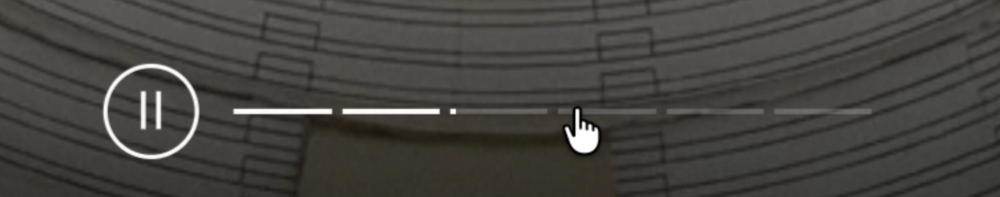
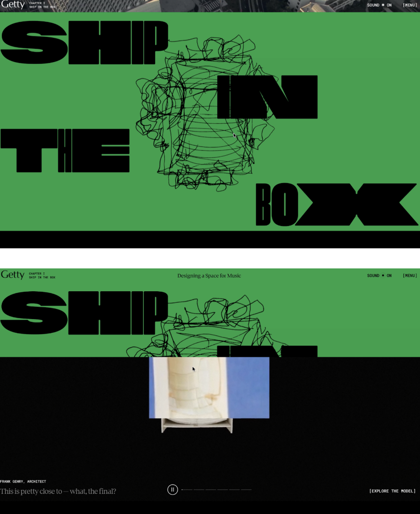
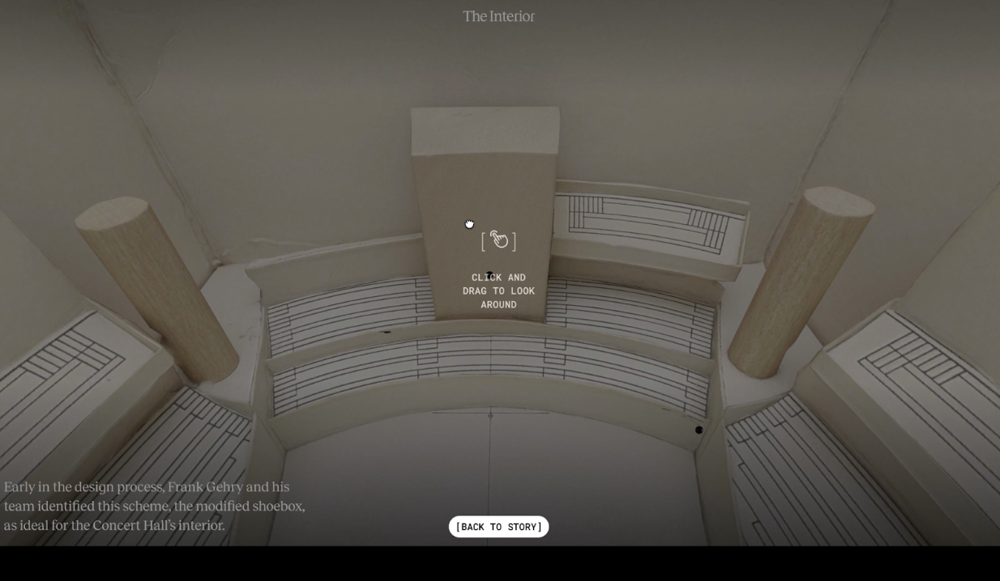
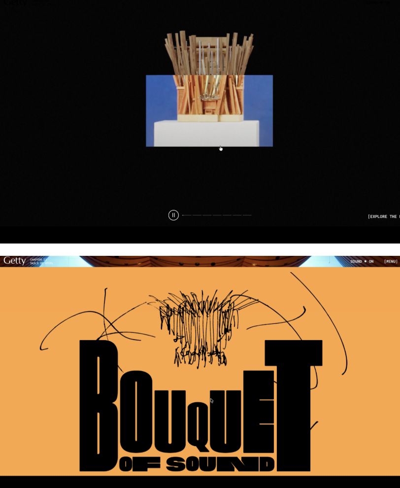
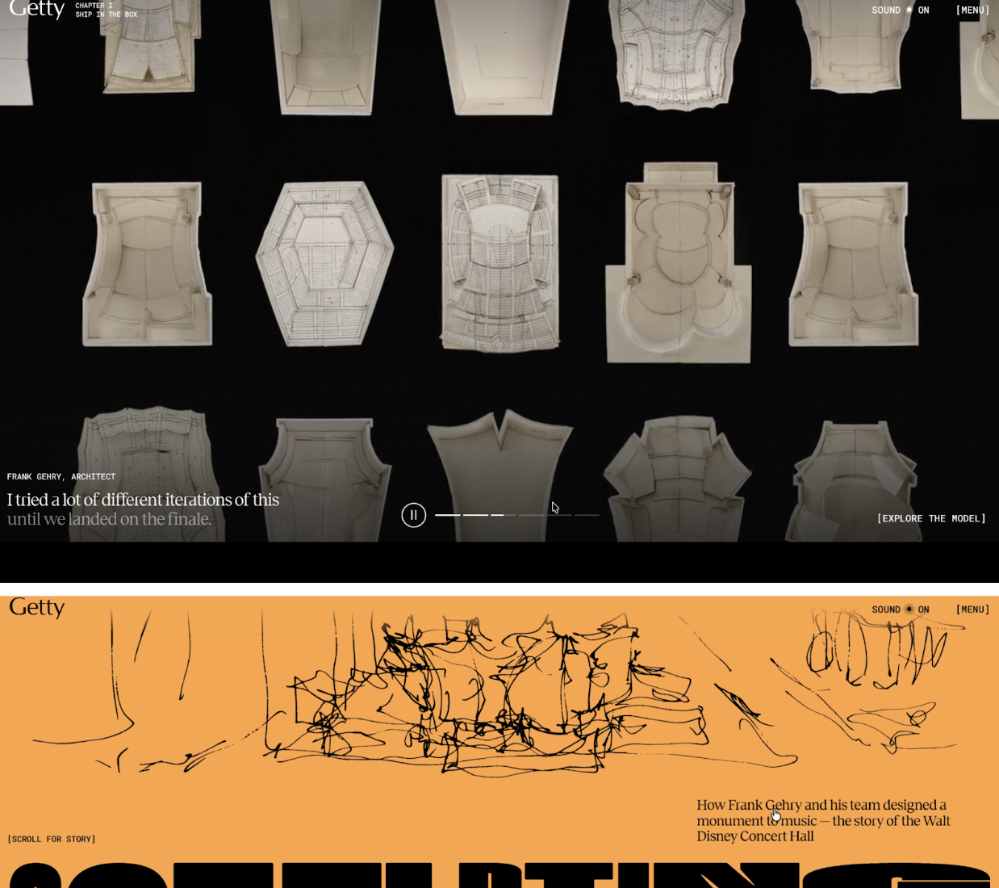
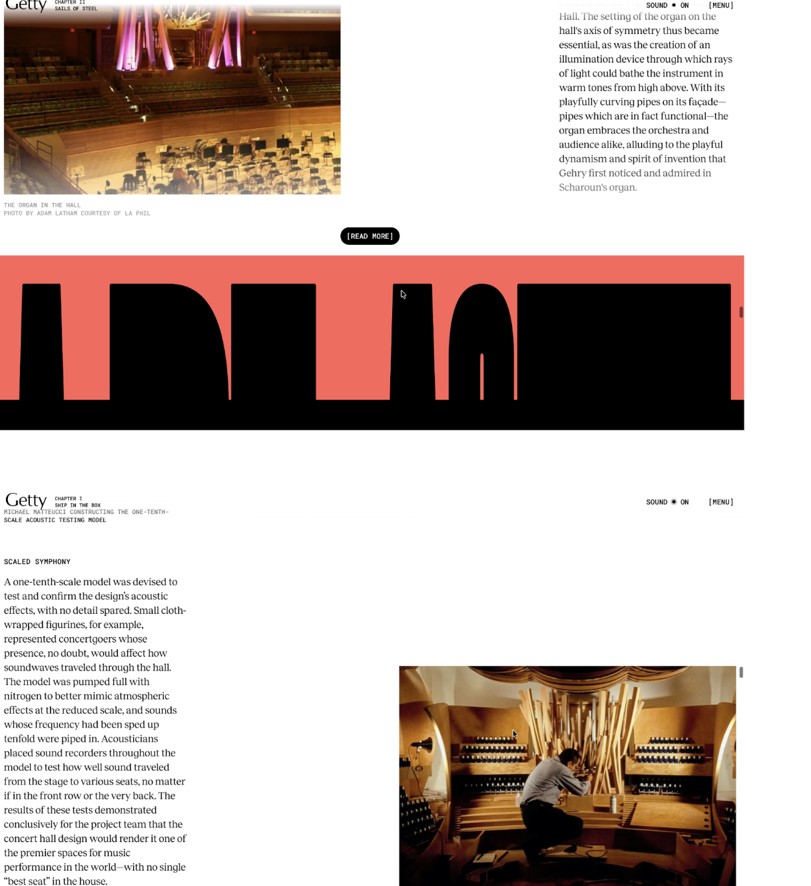

What was the first thing you paid attention to when interacting with the experience?
The first thing that I took notice of were the different forms of media used together in the first segment of the website, such as the flat coloured background transitioning into video through the movement of the user’s cursor. Different movements and interactions from the user’s mouse (such as clicking, hovering, dragging etc) created movement/fluidity in the elements of the website.


Spend two minutes with the experience and create a list of each of your discrete actions.
- Attention is immediately turned to the bold, moving text on the starting page (moves without user intervention - inviting user to scroll over the text - doing this reveals a quote from the designer which follows your cursor as you move
- This then leads the user to click where the quote is following, causing the bold text to change in size and colour
- User can then scroll forwards into the first segment of the ‘story’, as a their scrolling controls the pace of an interactive video - allowing them to move fast/slow backwards/forwards etc through their control
- User can then navigate towards the video segments of the chapters, which they can choose to skip or guide towards specific parts of the video


What part of the experience did you spend the most time engaging with?
Clicking and hovering around the title cards to see if they would change or reveal more information when the mouse is near them. Attempting to uncover more information about the website’s behaviour through repeating the same actions, to see if it would create different results - such as dragging the pages down to move on to a new ‘chapter’. The ‘explore’ function in the site was also very immersive - allows the viewer to navigate through an explorable 3D model of the structure itself.

What was the most common action in your two minute interaction with the experience?
Scrolling and re-scrolling up and down to replay the video/text transitions. The speed of the user’s mouse alters the pace of the experience, making it more interesting to play around with the moving elements in the website. The common action and movement from the site itself was the ‘flow’ of the elements when navigating its structure. It gives the user the impression that nothing ever ends/concludes, and the ongoing experience encourages them to keep progressing to the next stage.
What is your impression of the intended primary goal of the interactive experience?
The site is structured as an educational reflection of the planning/building process behind the Walt Disney concert hall, presenting each stage of the process like chapters in a story. The website builds an immersive experience for the viewer, similar to a documentary or interview but with various media sources integrated within the content. This process allows a wider audience to engage with the content - making it game-like in its portrayal.
How does the interactive experience communicate this primary goal?
It keeps the user engaged through implementing a range of media formats to connect with the flow of the story - these elements become interlinked as the user engages with the site (e.g. the video playing as the user can scroll through other segments of the page). The website connects different chronological stages of the concert hall project - from the drawing plans to the physical mockups - through the use of layering/transitioning these images over each other. Allows the user to compare the differences from the first instance of the design to finalisation.

What is your impression of how the experience should be interacted with over time?
(For how long and how many different times)
The longevity of this website seems to have no distinct limits, as it is purely a recounting of the design process and history of the structure. There are no elements present on the site that are obsolete or devalued through time - any user at any point and time can browse through the sketches and video content (in a similar way that they could rewatch a show or replay a game). These links direct the viewer towards different types of interactable content, keeping them engaged & interested in exploring more of the site.
How does the interactive experience communicate how it should be interacted with over time?
Repeated use of the site is encouraged through the subtle interactive elements located around the main content, which the user may discover later on through replaying. Each stage/chapter in the user’s navigation journey unlocks a new layer of content they can explore with different elements, inviting a sense of curiosity that allows them to scroll back and forth through the content (similar to rereading a book to discover parts missed).
What other media forms (digital or otherwise) does the experience reference?
The media forms that it references are the digitally scanned sketches of the architecture design plans, which are both collated at the end of the experience for the user to browse through, and reflected as a constant in the graphic design/typography style throughout the website’s layout (sketched designs as the header for the pages).

What does this reference/s communicate to you about how you should act when engaging with
your research experience?
The website takes on the stylistic choice of retelling information through a book-like format - allowing the user to feel as though they are turning pages as they move through the transitions/stages within the site. As the navigation progresses, the site evolves into a hybrid of interactive content & traditional book-like formatting. The site is easy to skip or scroll to specific chapters, allowing the user to single out the specific section of information that they wish to replay.

What does this reference/s communicate to you about how you should feel when engaging with
your research experience?
The website presents the information and history behind the concert hall in a manner that is engaging and flexible to the user, using a mix of interview, photography and written content to invite them into an immersive audio-visual journey. The changing audio orchestral tracks paired with the interactive text elements allows you to have fun with the site while absorbing new information about the legacy of the concert hall.